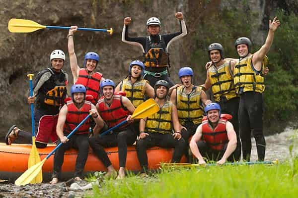

Our happy customers

Purpose: Our purpose is to connect people with nature through adrenaline-filled and
unforgettable experiences, letting you live authentic adventures that make you forget every worry
and discover the wildest side of life.
Mission: Our mission is to offer extreme and safe rafting experiences, led by
passionate professionals, that allow you to immerse yourself in the wild nature, live authentic
adventures, and discover the boldest side of yourself.
Creed: We believe that adventure is a right for everyone. We believe in the power
of wild nature to inspire, in the courage to push your limits, and in sharing experiences that
enrich life and bring happiness.
Every wave we face is an opportunity to discover who we truly
are.
Motto: Waves that shake, emotions that stay.